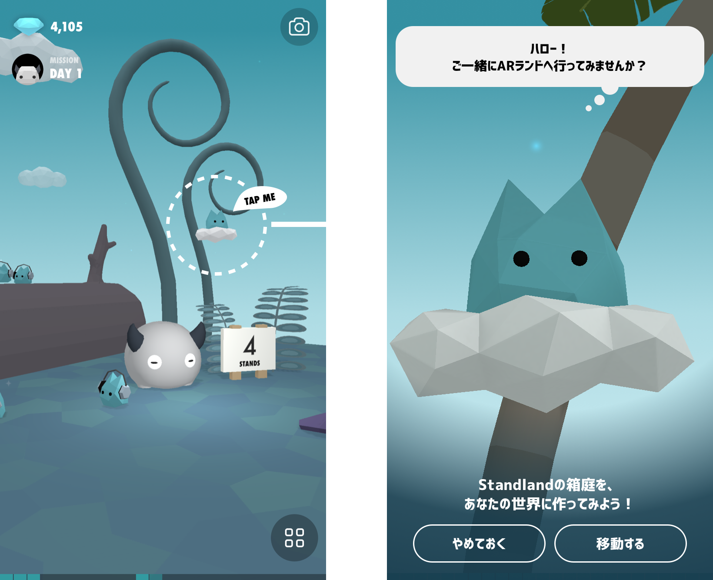
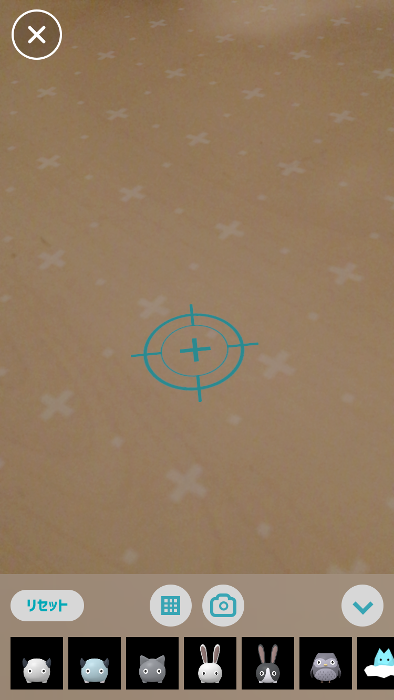

ヘルプ
ARランド
※ iOS 11、iPhone SE、6s以降が必要です。
ARランドとは？

AR（Augmented Reality、拡張現実）は、実在する風景に仮想的なアイテムを重ねることで、現実を拡張してみせることを言います。
Standlandでは、あなたの机やテーブルの上などに、iPhoneを通して、Standlandのキャラクターやアイテムを配置して楽しむことができます。
ARランドへの移動
ARランドへ移動するには、ランドに浮かんでいる雲ジェミーをタップしてください。
机やテーブルなどの平面を検出させる
ARランドへ移動して、初期化が始まったら、カメラを左右に少し動かしてみてください。

白い点線の四角が表示され、下部にアイテムリストが表示されたら、iPhoneが平面を探しているしるしです（右の画面）。
アイテムを置きたい机やテーブルなどの平面に向けて、カメラを左右、上下にゆっくり動かしてみてください。
この時点でアイテムを置くことができますが、平面がきちんと認識されてからのほうが安定するのでおすすめです。
平面が認識されると、以下のような画面になります。

平面の検出のコツ
iPhoneのARでは、水平の平面を検出できますが、うまく検出できていないままだと、設置したアイテムの位置がずれたり、サイズがおかしくなることがあります。
検出されやすい平面は、明るい場所で、あまり反射がない面、木目やタイルなど表面にテクスチャのある面などです。
また、場所を移動した後や、長く平面が検出されなかった場合は、一度リセットをお試しください。
ほか注意点
アイテムの配置情報は、ARランドを離れたり、Standlandのアプリを離れたりすると、平面の情報とともに失われます。
その場合、「リセット」してもう一度始めからやりなおす必要があります。